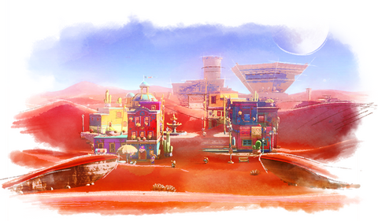

Regno delle Sabbie
Il Regno delle Sabbie è un'area di Super Mario Odyssey ed il terzo regno del gioco.
Quando Mario arriva per la prima volta nel Regno delle Sabbie, scopre che nel
deserto sono apparsi improvvisamente dei misteriosi cristalli di ghiaccio, inoltre,
sulla sabbia, sono visibili le orme di Bowser. Dopo aver scalato una torre, e una
volta raccolti degli Spicchi di luna, l'idraulico riesce a raggiungere la cima della
Piramide Capovolta, qui combatte contro Hariet e viene a sapere che Bowser ha rubato
l'Anello dell'unione. Sconfitta la Broodals, Mario ottiene una multiluna e la Piramide
Capovolta si solleva in aria, rivelando un'entrata segreta sotto la sabbia. Di notte,
Mario torna nel punto in cui si trovava la piramide inizialmente e trova l'ingresso per
il Tempio segreto di Tostalandia, una grotta completamente ghiacciata, in cui incontra
Sganassotec, che lo attacca, perché pensa sia stato lui a rubare l'anello. Sganassotec
ha ricoperto il deserto di ghiaccio, a causa del furto dell'anello, ma una volta
sconfitto il ghiaccio si scioglie e tutto torna alla normalità.
Tutte le Lune
1 . In cima alla torre
2 . Spicchi di luna tra la sabbia
3 . La prova della piramide capovolta
4 . Nella voragine del deserto
5 . Belvedere di Tostalandia
6 . Nicchia tra le rovine
7 . In cima al pilastro pendente
8 . Stanza nascosta fra le sabbie mobili
9 . Il segreto del murale
10 . Segreto del murale capovolto
11 . In cima al grande arco
12 . Da una cassa tra le rovine
13 . In cima al pilastro solitario
14 . Sulla coda della statua
15 . Fontana portacappelli
16 . Ritrovo degli uccelli
17 . In cima a una duna
18 . Caduta dal bagagliaio del taxi
19 . Nella breccia con Pallottolo Bill
20 . Sorpresa nel blocco
21 . Uccello errante del deserto
22 . Uccello errante della palude tossica
23 . Strani movimenti sotto la pietra
24 . Tesoro sulle rovine dei Ruggitaxi
25 . Giardinaggio nel deserto - Piazza
26 . Giardinaggio nel deserto - Rovine
27 . Giardinaggio nel deserto - Dirupo
28 . Atletic-tac 1
29 . Atletic-tac 2
30 . Atletic-tac 3
31 . Sepolta nella sabbia! Bau!
32 . A caccia di note in cima alle palme
33 . Caccia alle pecore fra le dune
34 . A pesca nell'oasi
35 . Amore nel cuore del deserto
36 . Tra i cinque cactus
37 . Hai abboccato, Capitan Toad!
38 . Rincontro con Ruggitaxi!
39 . Il ritorno del Ruggitaxi
40 . Cactus nomade
41 . Quiz delle Sabbie: superato!
42 . Acquisti a Tostalandia
43 . Riservato al personale
44 . Gioco del cappello
45 . Marcia nel deserto
46 . Piramide Capovolta: stanza nascosta
47 . Forziere sotterraneo
48 . Formazione speciale di Torre Goomba
49 . La maledizione della mummia
50 . Il tesoro della Grotta Granita
51 . Sala del tesoro dell'enigmicia
52 . Tremori nel deserto
53 . Ballando in compagnia di nuovi amici
54 . Il labirinto invisibile
55 . Un teschio nel labirinto invisibile
56 . Il labirinto di Pallottolo Bill
57 . Un Pallottolo Bill confuso nel dedalo
58 . In groppa al Ruggitaxi
59 . A caccia di note con Ruggitaxi
60 . Quartiere insolito
61 . Sopra un quartiere insolito
62 . Portale per Tostalandia
63 . Con la foto indizio del R. delle Sabbie
64 . Buona musica nel Regno delle Sabbie
65 . Nascondino tubalese tra le sabbie
66 . Corsa standard
67 . L'anello dell'unione ritrovato
68 . Il ritorno del giramondo
69 . Peach nel Regno delle Sabbie
70 . Salto dalla palma!
71 . Sul pilastro a nord
72 . Un tuffo nelle sabbie mobili
73 . Nei cieli sopra il canyon
74 . Sull'isolotto della palude tossica
75 . Un bagliore invisibile
76 . In cima al pilastro a est
77 . Saltellando nel deserto
78 . Divieto di affissione
79 . A caccia di note sulle dune
80 . A caccia di note nel muro
81 . Amore ai confini del deserto
82 . Marcia del deserto 2.0
83 . Corsa master
84 . Alla fine della piattaforme invisibili [sic]
85 . Salto sulla piattaforma invisibile
86 . Scatti e salti fra le rovine
87 . Corsa tra le rovine cedevoli
88 . Attraverso il gelido canale
89 . Stanza segreta nel gelido canale